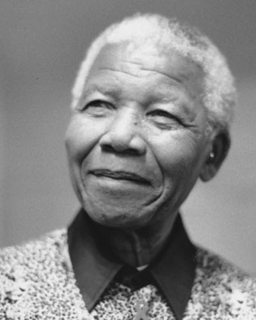
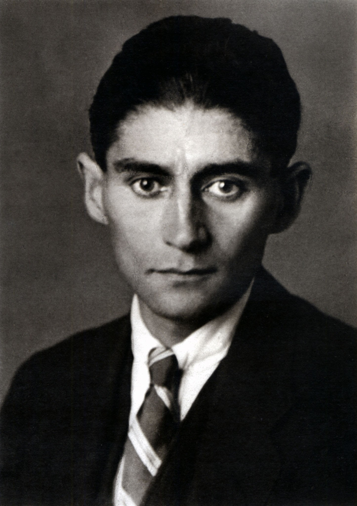

Sokrates
Antik Yunan filozofudur. Sorgulayıcı yöntemiyle felsefenin temel taşlarından biridir.
wikipedia
Albert Einstein
En çok görelilik kuramını geliştirmesiyle tanınan Almanya doğumlu teorik fizikçi ve bilim insanı.
wikipedia

Eric Partaker
CEO'ların kendilerini ve şirketlerini büyütmelerine yardımcı olan bir girişimci, yazar ve CEO Koçudur.

Necib Mahfuz
1988 Nobel Edebiyat Ödülü sahibi Mısırlı yazardır. Nobel Ödülü kazanan ilk Müslüman ve tek Arap yazardır.
wikipedia
Orhan Veli Kanık
Türk şiirindeki eski yapıyı temelinden değiştirmeyi amaçlayarak sokaktaki adamın söyleyişini şiir diline
taşıdı.
wikipedia

Nelson Mandela
Güney Afrikalı Anti Apartheid aktivist ve Güney Afrika Cumhuriyeti'nin ilk siyahî devlet başkanı.
wikipedia
Osho
Hindistanlı mistik guru ve spiritüel.
wikipedia

Shakespeare
İngiliz şair, oyun yazarı ve oyuncudur.
wikipedia

Cahit Sıtkı Tarancı
Türk şair, yazar ve çevirmendir.
wikipedia
C.chaplin
İngiliz sinema yönetmeni, oyuncu, yazar, film müziği bestecisi, kurgucu ve komedyen.
wikipedia

Stefan Zweig
Avusturyalı yazar ve gazeteciydi.
wikipedia

Franz Kafka
Almanca konuşan Bohemyalı, roman ve hikâye yazarı.
wikipedia